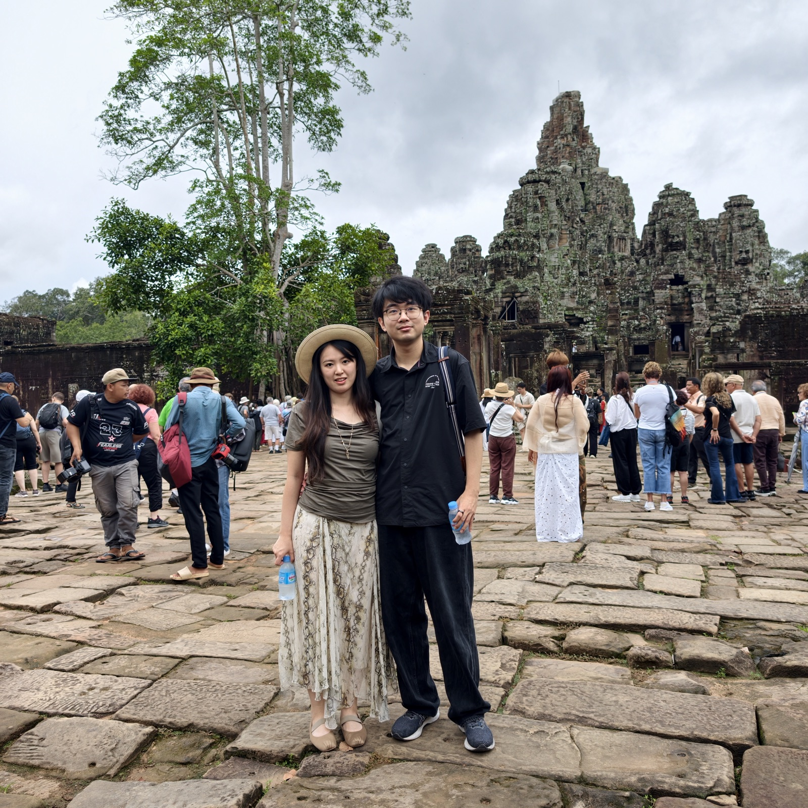
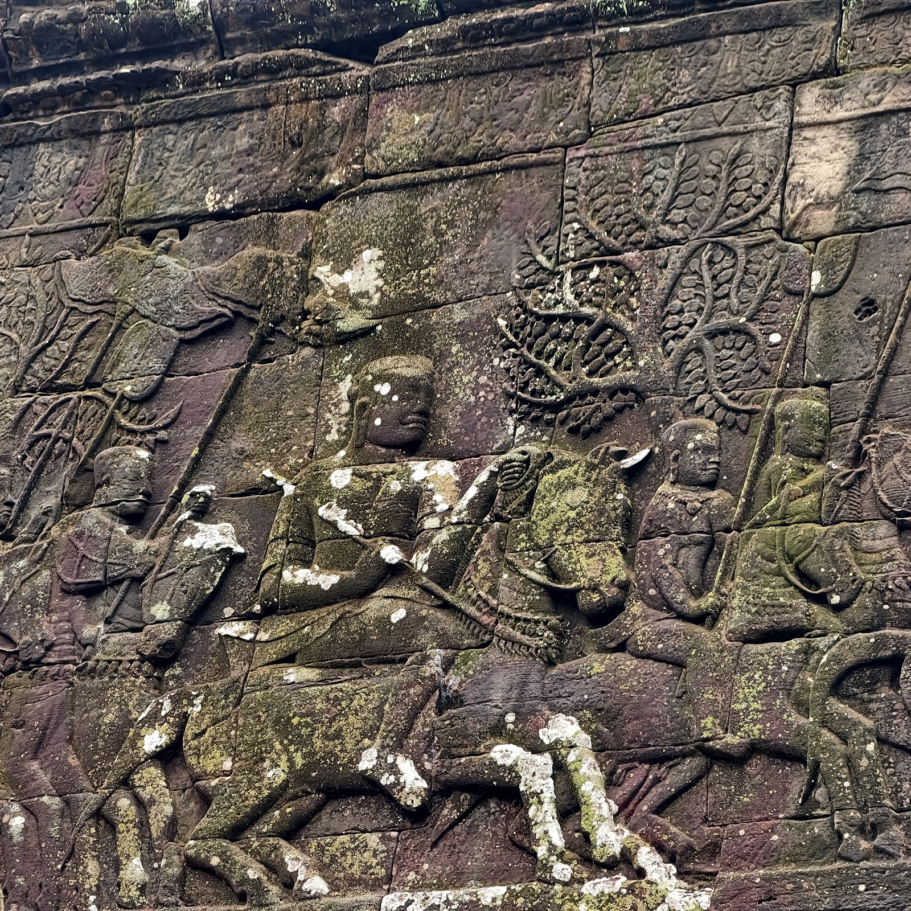
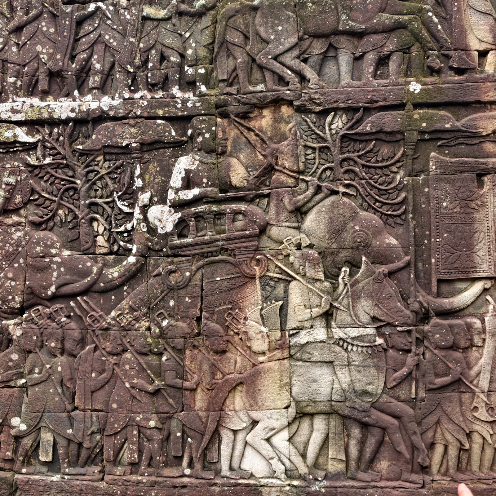
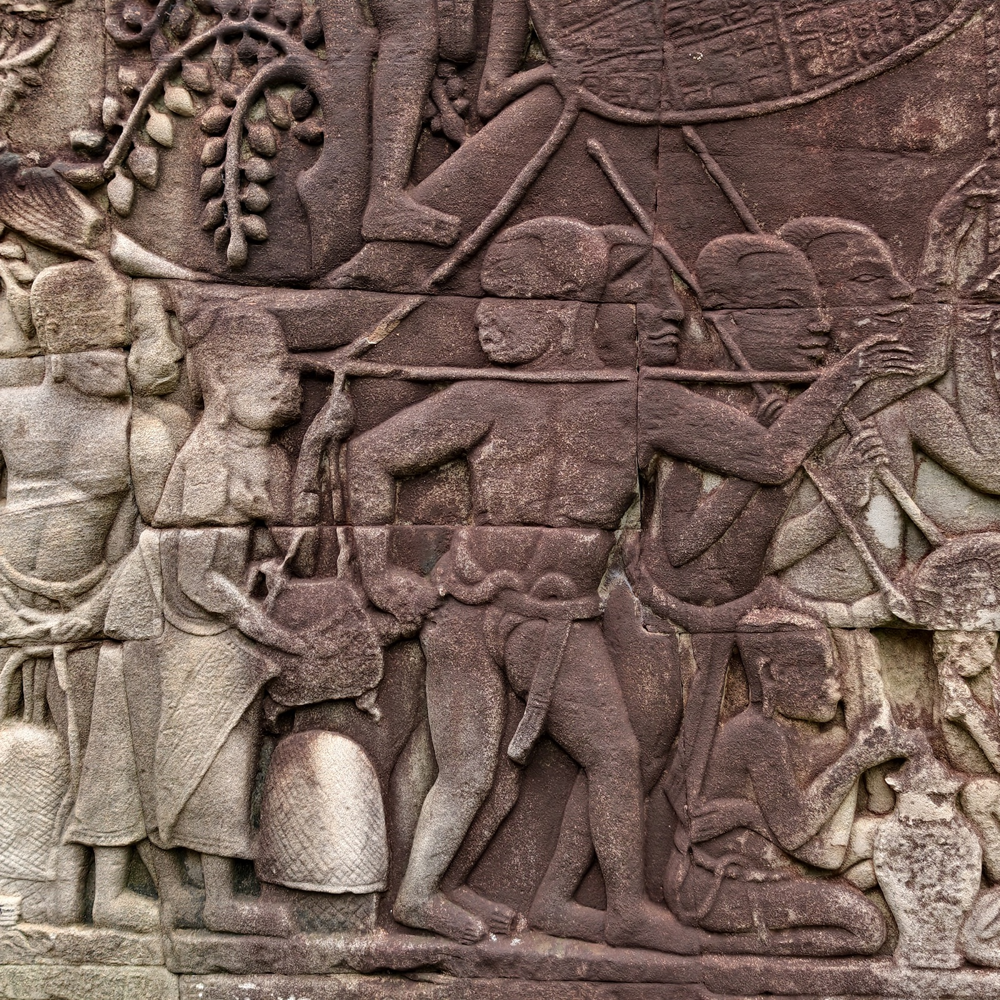
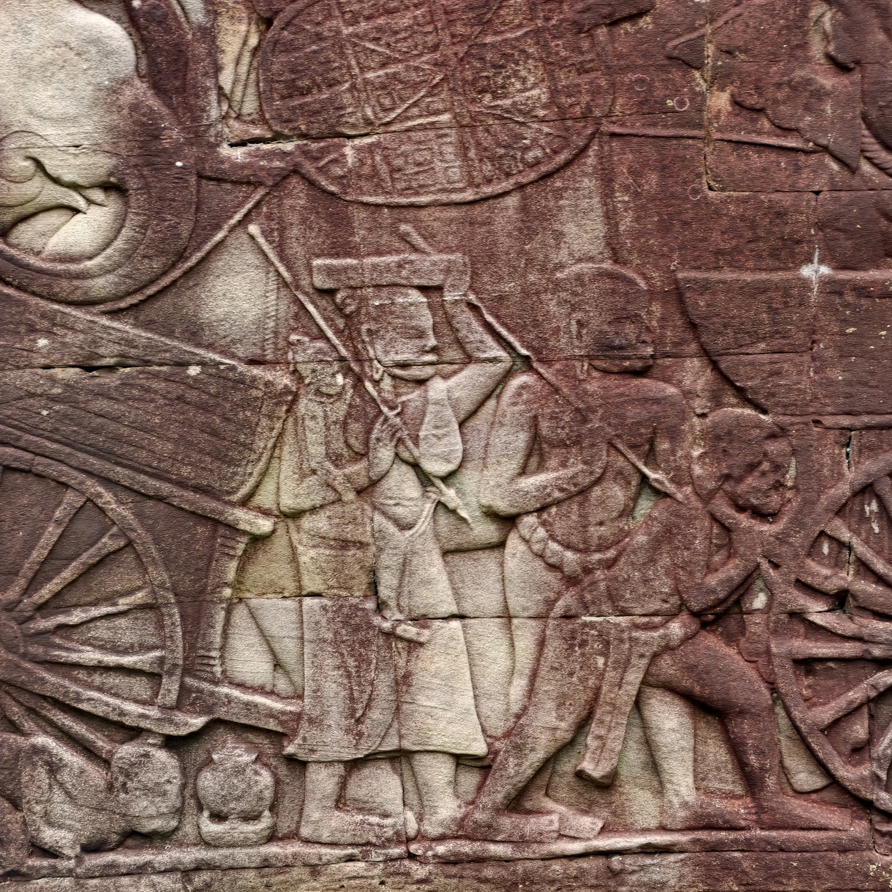
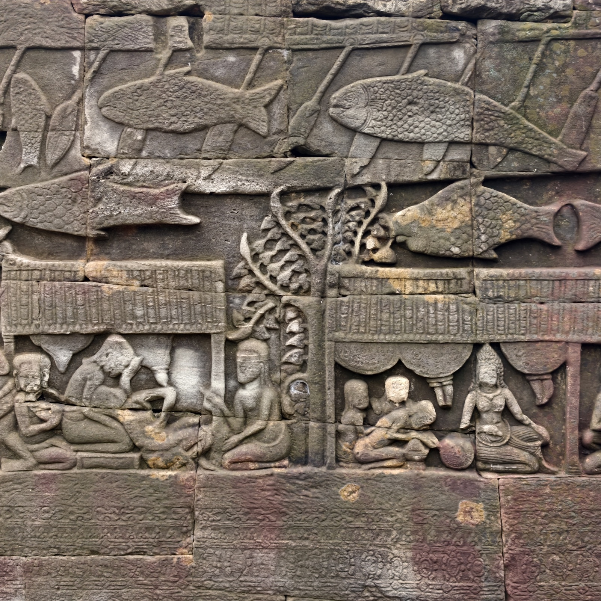
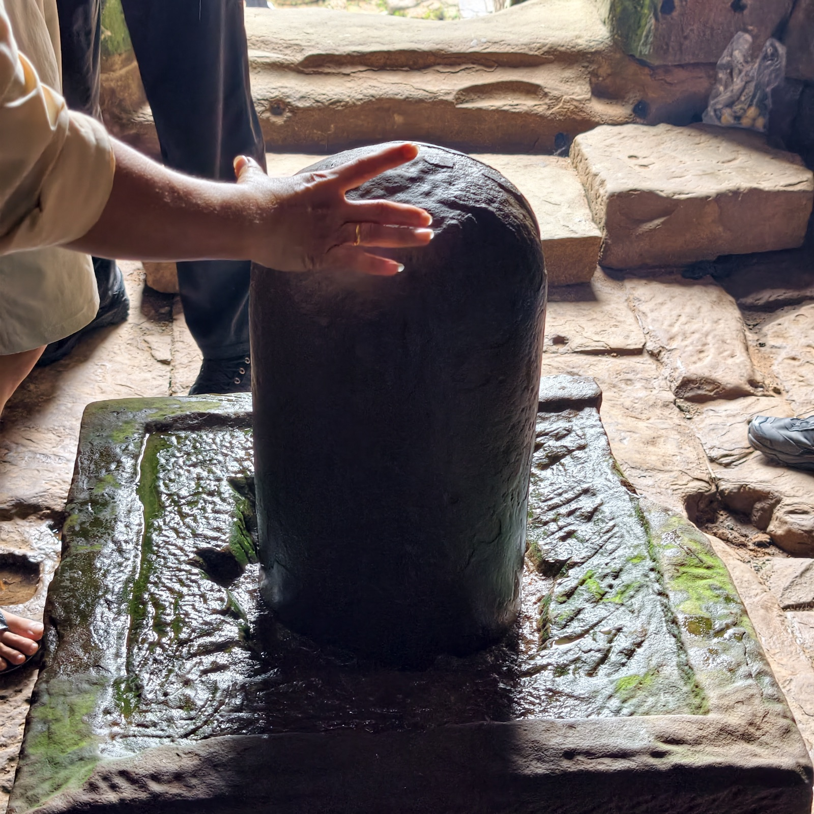
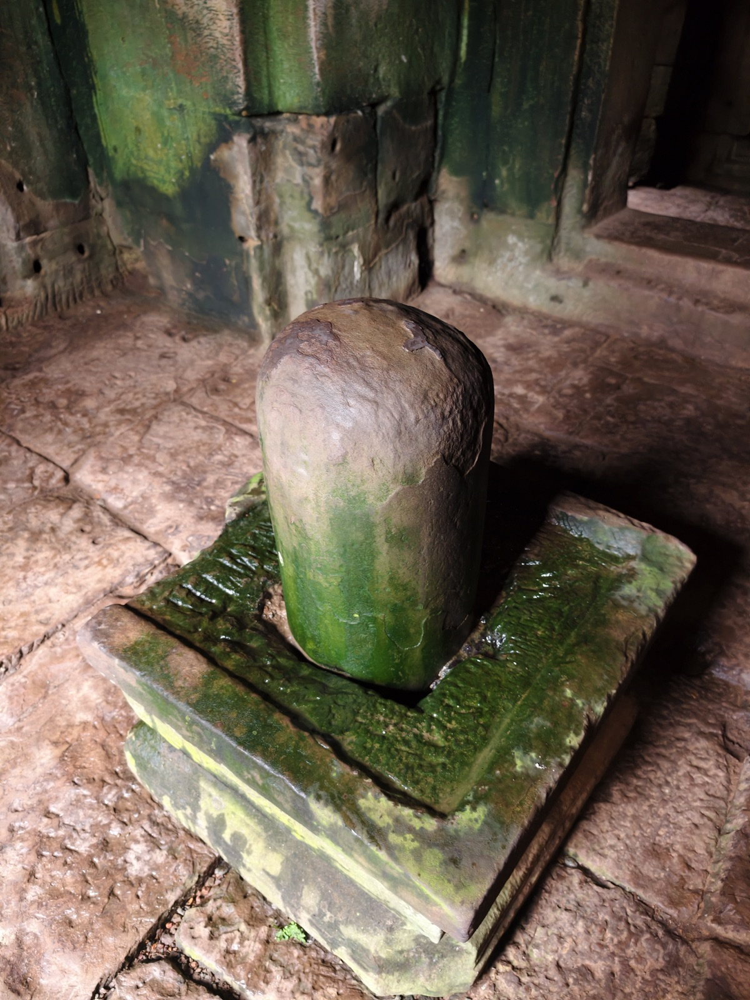

巴戎寺
巴戎寺是阇耶跋摩七世的国庙，大吴哥的正中心。它以「高棉的微笑」行销全球，作为吴哥王朝的标志——难以计数的人面塔彼此掩映，远看像是层层堆高的金字塔；随着距离逐渐接近，参观者很难不为四面巨大的神秘面孔所震撼。

建造者阇耶跋摩七世原本是印度教徒，他执政之初国势相当险峻：对外，吴哥与占婆征战连年，曾一败涂地，被占婆攻入首都；对内，长期的印度教信仰与种姓制度让婆罗门僧侣握有强大的政治与宗教实力，其中不少人沦为权谋与利益的操弄者，国政腐坏，举国上下都期待彻底的变革，佛教势力愈来愈强。于是阇耶跋摩七世改宗佛教，废止旧势力与种姓制度，重新整顿国家，把吴哥发展成中南半岛上国土最辽阔、国力最强盛的霸主。直到现在，柬埔寨人仍把阇耶跋摩七世视为民族的代表，到处都能见到他的雕像，被当作神明奉祀。
阇耶跋摩七世的信仰极为虔诚。他的雕像都被雕成观世音的模样，慈爱温和，微微低着头，静定地垂目微笑。人面塔的表情也有相同的特征——这些脸孔可能是以皇室成员（诸侯）的形象为蓝本，每张脸的五官都不太一样。有人说它们是佛陀，也有人认为是观世音菩萨。
阇耶跋摩八世之后国力大衰，后来的国王不再为自己建造新的国庙，而是继续沿用巴戎寺。但每一任国王都会依需求修改增建，代代累积的结果，巴戎寺成了一座拥挤的超级迷宫：这座迷宫由两层回廊构成同心圆的外围，中央塔则是层瓣重重的曼陀罗。阇耶跋摩七世早年信仰印度教，虽然后来皈依佛教，巴戎寺的修筑仍以印度教的宇宙观为基础——主要出入口朝东，因为在印度教的世界里，太阳自东方跃升，东方是吉祥的方向。


巴戎寺的回廊浮雕多以战争为内容，特别是对占婆的战争。占婆是现在越南中部的一个古国，中国称之为「林邑」，原本也是印度教国家，晚期改奉伊斯兰教。占婆的国力在十四世纪达到巅峰，与邻国间征战不断，十五世纪下半叶被越南击败、纳为属地，直到一八三二年才正式灭亡。这些壁画除了战争场面，中间还穿插着吴哥人民的生活场景，也有宫廷的场面——打仗归打仗，日子照过。





一个林伽。后面去的很多寺庙里，林伽都已无存——或被毁、或被请走，巴戎寺倒是还留着完好的，湿婆信仰的痕迹在这座佛寺里留了下来。
三日票的最后一天，天气终于放晴了，是这几天里最好的一天。我们坐着突突车走完最后的行程，请司机绕着巴戎寺的外圈又转了一圈——晴天之下的人面塔，和前两天雨里的完全是两座庙。巴戎寺是我们吴哥之旅进的第一座寺庙，也是临走前的最后一眼。很震撼，意犹未尽。隔着车窗看那些面孔一张张退后，直到转弯看不见了，才真的觉得要走了。